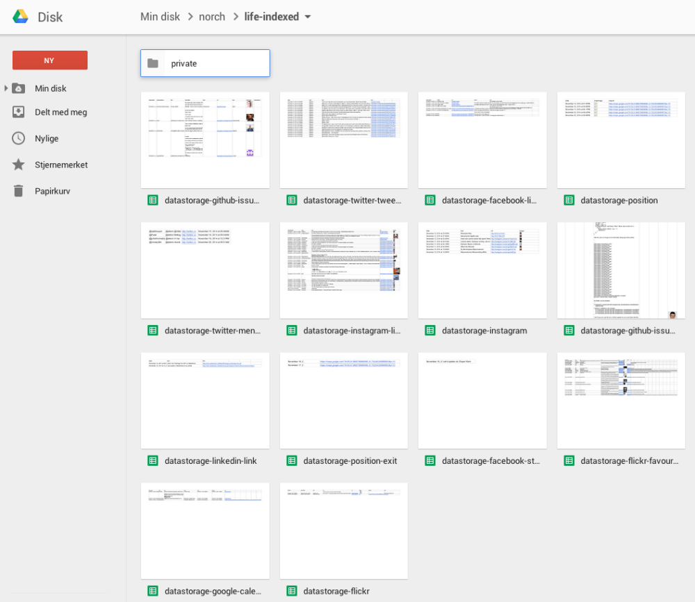
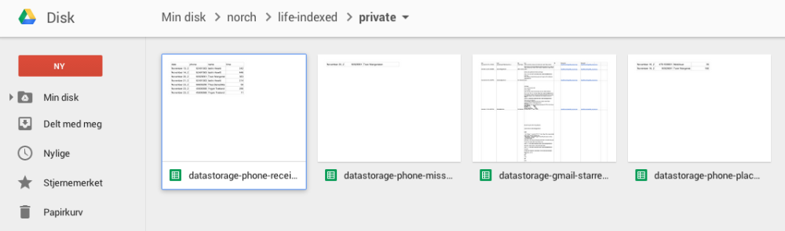
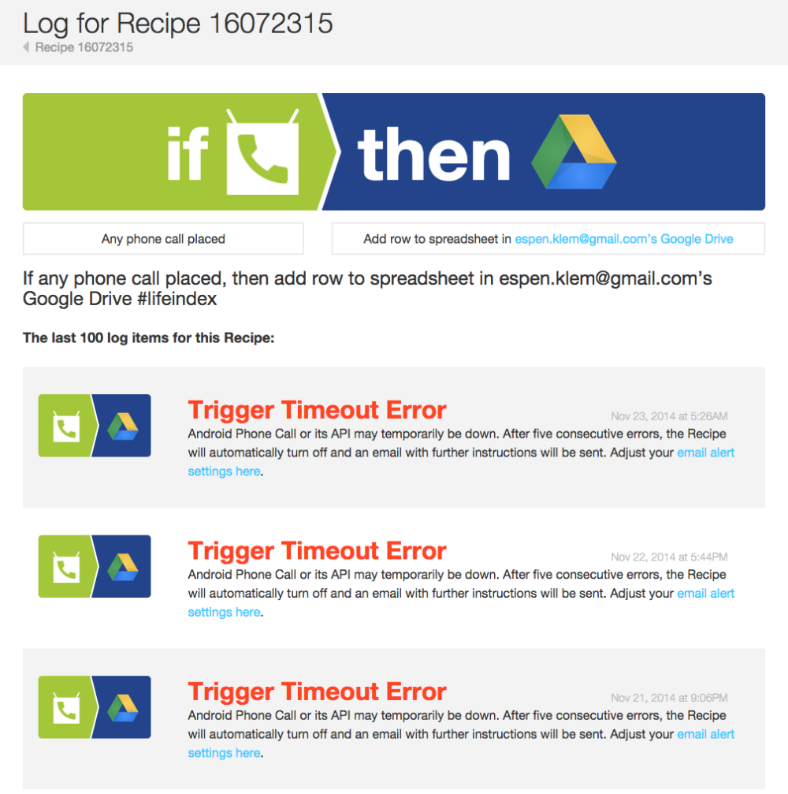

What if you could index your whole life and make this lifeindex available through search? What would that look like, and how could it help you? Refinding information is obviously one of the use case for this type of search. I’m guessing there’s a lot more, and I’m curious to figure them out.
Actions and reactions instead of web pages
I had the lifeindex idea for a little while now. Originally the idea was to index everything I browsed. From what I know and where Norch is, it would take a while before I was anywhere close to achieving that goal. Then I thought of IFTTT, and saw it as a ‘next best thing’. But then it hit me that now I’m indexing actions, and that’s way better than pages. And the indexing process is event driven. But what I’m missing from most sources now are the reactions to my actions. If I have a question, I also want to crawl and index the answer. If I have a statement, I want to get the critique indexed.
IFTTT and similar services (like Zapier) is quite limiting in their choice of triggers. Not sure if this is because of choices done by those services or limitations from the sites they crawl/pull information from.
A quick fix for this, and a generally good idea for Search Engines, would be to switch from a preview of your content to the actual content in the form of an embed-view.
Technology: Hello IFTTT, Google SpreadSheet and Norch
IFTTT is triggered by my actions, and stores some data to a series of spreadsheets on Google Drive. These spreadsheets can deliver JSON. After a little document processing these JSON-files can be fed to the Norch-indexer.
Why hasn’t this idea popped up earlier?
Search engines used to be hardware guzzling technology. With Norch, the “NOde seaRCH” engine, that has changed. Elasticsearch and Solr are easy and small compared to i.e. SharePoint Search, but still it needs a lot of hardware. Norch can run on a Raspberry Pi, and soon it will be able to run in your browser. Maybe data sets closer to small data is more interesting than big data?
A Raspberry Pi running a Norch search enginge
Why using a search engine?
It’s cheap and quick. I’m not a developer, and I’ll still be able to glue all these sources together. Search engines are often a good choice when you have multiple sources. IFTTT and Google SpreadSheet makes it even easier, normalising the input and delivering it as JSON.
How far in the process have I come?
So far, I’ve set up a lot of triggers/sources at IFTTT.com:
- Instagram: When posting or liking both photos and videos.
- Flickr: When posting an image, creating a set or linking a photo.
- Google Calendar: When adding something to one of my calendars.
- Facebook: When i post a link, is tagged, post a status message.
- Twitter: When I tweet, retweet, reply or if somebody mentions me.
- Youtube: When I post or like a video.
- GitHub: When I create an issue, gets assigned to an issue or any issues that I part take in is closed.
- WordPress: When new posts or comments on posts.
- Android location tracking: When I enter and exit certain areas.
- Android phone log: Placed, received and missed calls.
- Gmail: Starred emails.
  Data from different sources added to spreadsheets on Google Drive with IFTTT.
And gotten a good chunk of data. Indexing my SMS’es felt a bit creepy, so I stopped doing that. And storing email just sounded too excessive, but I think starred emails would suit the purpose of the project.
Those Google Drive documents are giving me JSON. Not JSON that I can feed directly Norch-indexer, it needs a little trimming.
Issues discovered so far
Manual work
This search solution needs a lot of manual setup. Every trigger needs to be set up manually. Everytime a new trigger is triggered, I get a new spreadsheet that needs a title row added. Or else, the JSON variables will look funny, since first row is used for variable names.
The spreadsheets only accepts 2000 rows. After that a new file is created. Either I need to delete content, rename the file or reconfigure some stuff.
Level of maturity
 A lot of trigger timeout errors in the recipe log.
IFTTT is a really nice service, and they treat their users well. But, for now, it’s not something you can trust fully.
Cleaning up duplicates and obsolete stuff
I have no way of removing stuff from the index automatically at this point. If I delete something I’ve added/written/created, it will not be reflected in the index.
Missing sources
Books I buy, music I listen to, movies and TV-series I watch. Or Amazon, Spotify, Netflix and HBO. Apart from that, there are no Norwegian services available through IFTTT.
History
The crawling is triggered by my actions. That leaves me without history. So, i.e. new contacts on LinkedIn is meaningless when I don’t get to index the existing ones.
Next steps
JSON clean-up
I need to make a document processing step. Norch-document-processor would be nice if it had handled JSON in addition to HTML. Not yet, but maybe in the future? Anyway, there’s just a small amount of JSON clean-up before I got my data in and index.
When this step is done, a first version can be demoed.
UX and front-end code
To show the full potential, I need some interaction design of the idea. For now they’re all in my head. And these sketches needs to be converted to HTML, CSS and Angular view.
Embed codes
Figure out how to embed Instagram, Flickr, Facebook and LinkedIn-posts, Google Maps, federated phonebook search etc.
OAUTH configuration
Set up OAUTH NPM package to access non-public spreadsheets on Google Drive. Then I can add some of the less open information I have stored.